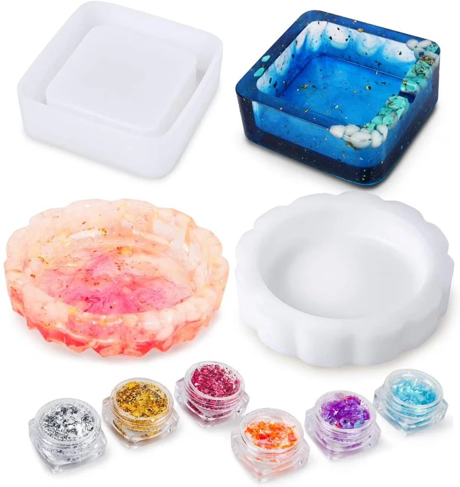
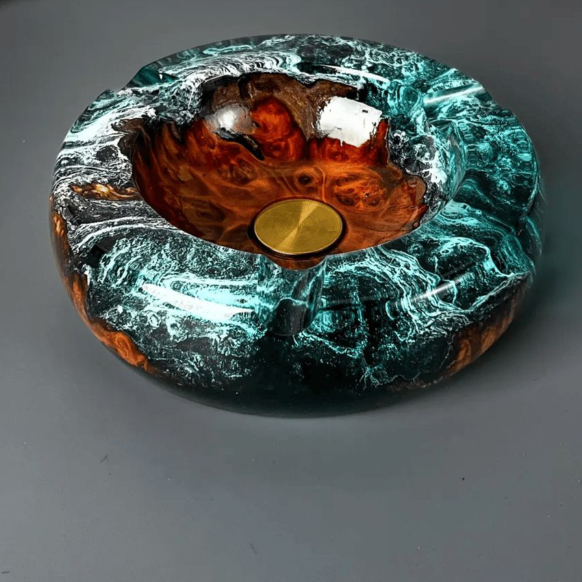
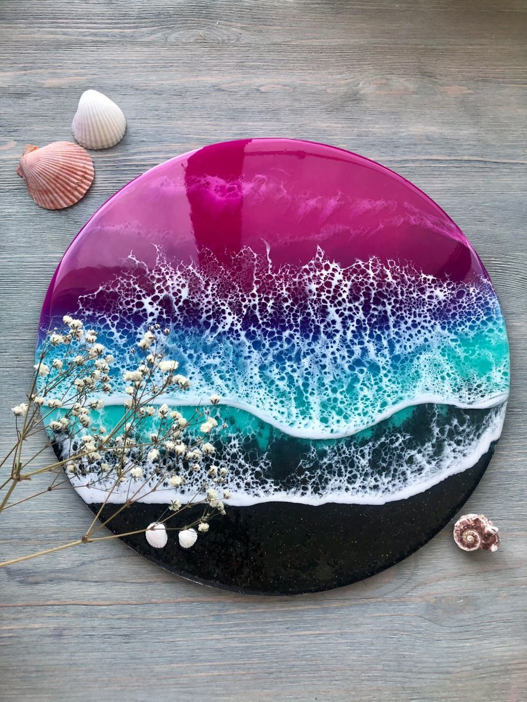

Over deze Workshop
Wat is epoxy?
Epoxy is een kunsthars die bestaat uit twee vloeibare delen: de hars en een verharder. Zodra u beide in de juiste verhouding mengt, begint het materiaal langzaam uit te harden tot een stevig, glashelder kunststof. Zolang de epoxy nog vloeibaar is, giet u hem in een mal en kunt u er van alles aan toevoegen: kleurpigment, glitter, bladgoud, schelpjes of gedroogde bloemen. Zo wordt elk stuk uniek.

Het mooie van epoxy is dat het makkelijk in gebruik is, ook als u er nog nooit mee heeft gewerkt. Onder begeleiding van onze ervaren makers leert u stap voor stap hoe u de hars mengt, kleurt en giet, en hoe u luchtbelletjes voorkomt voor een strak en helder eindresultaat.
De workshop geven wij zowel bij u op locatie als in ons eigen atelier in de Betuwe. Komt u liever naar ons toe, dan ontvangen wij u graag in onze volledig ingerichte werkruimte. Wilt u dat wij langskomen, bijvoorbeeld voor een teamuitje op kantoor of een feestje bij u thuis? Dan brengen wij alle materialen gewoon mee.
De workshop
U kiest zelf wat u wilt gieten en welke kleuren en decoraties u gebruikt. Wij leren u alles over het mengen van hars en verharder, het kleuren van de epoxy en het werken in lagen voor een mooi diepte-effect. Terwijl de epoxy begint uit te harden, vertellen wij u hoe u uw creatie het beste afwerkt en verzorgt. Aan het einde van de workshop heeft iedereen een eigen, uniek stuk gemaakt: een perfect handgemaakt cadeau of een pronkstuk voor in huis.
Wat Kunt U Maken?
Met epoxy zijn de mogelijkheden bijna eindeloos. Tijdens de workshop kiest u uit onder andere:
 Onderzetters
Onderzetters- Kaarsenhouders
- Asbakken en schaaltjes
 Borrelplanken
Borrelplanken Kleine sieraden en hangers
Kleine sieraden en hangers En nog veel meer
En nog veel meer
Welke stukken u kunt maken, hangt af van de mallen die wij voor uw workshop meenemen. Heeft u een speciale wens? Vermeld het in uw aanvraag.


 Creatieve Vrijheid
Creatieve Vrijheid
Geen ervaring nodig. Onze workshops zijn ontworpen voor deelnemers van alle niveaus.
 Kies Uw Kleuren
Kies Uw Kleuren
Van helder als glas tot diep oceaanblauw met glitter: u bepaalt zelf de kleuren en decoraties.
 Mee Naar Huis
Mee Naar Huis
U gaat naar huis met uw eigen handgemaakte creatie, een uniek cadeau of pronkstuk.
 Hapje & Drankje
Hapje & Drankje
Creëer in een ontspannen, gezellige sfeer, ideaal voor groepen en feestjes.
Uw Eigen Mal, 3D-Geprint
Wilt u iets gieten wat u nergens anders vindt? Op uw aanvraag maken wij ook epoxymallen op maat. Wij kunnen verschillende kleine mallen zelf 3D-printen, bijvoorbeeld in de vorm van uw bedrijfslogo, een initiaal of een figuurtje dat bij uw feest past. Zo wordt uw workshop helemaal persoonlijk.
Denk aan onderzetters met het logo van uw bedrijf voor een teamuitje, of kleine hangers met de initialen van de bruid voor een vrijgezellenfeest. Vermeld uw idee in uw aanvraag, dan denken wij graag met u mee over wat er mogelijk is.
Wat Maakt Deze Workshop Bijzonder?
Epoxy gieten is een workshop vol verrassingen. U ziet de kleuren in elkaar overvloeien, glitters zweven in de hars en bloemen voor altijd vastgelegd worden in glashelder kunststof. Geen twee stukken worden hetzelfde, en u maakt iets wat u echt dagelijks gebruikt. Of u nu op zoek bent naar een origineel teamuitje, een creatieve verjaardag of gewoon een ontspannen middag: deze workshop biedt alles.
Zo heeft u het langst plezier van uw epoxy
Tijdens de workshop leren wij u hoe u uw zelfgemaakte creatie het beste verzorgt, zodat u er zo lang mogelijk van geniet:
- Geef het de tijd. Epoxy heeft na het gieten tijd nodig om volledig uit te harden. Gebruik uw creatie pas als hij helemaal hard is.
- Niet te heet. Zet geen gloeiend hete pannen op uw onderzetter of borrelplank. Epoxy kan bij hoge temperaturen zacht worden of vervormen.
- Uit de zon. Bewaar uw creatie liefst niet in de volle zon, zodat de kleuren mooi helder blijven.
- Met de hand afwassen. Reinig uw creatie met een zachte doek en lauw water, niet in de vaatwasser.
- Veilig werken. Tijdens de workshop werkt u met handschoenen en in een goed geventileerde ruimte. Wij zorgen voor alle beschermende materialen.
 Praktische Informatie
Praktische Informatie
De workshop Epoxy Gieten in het kort:
- Duur: 2 uur
- Professionele begeleiding
- Inclusief materialen (voor ieder wat wils)
- Voor beginners en gevorderden
- De kunstenaar maakt sfeerfoto's en een groepsfoto na afloop
Ook handschoenen en schorten zijn inbegrepen. U hoeft alleen uw creativiteit mee te brengen! De workshop kan voor groepen worden georganiseerd en wij geven hem zowel op locatie als in ons eigen atelier in de Betuwe. Voor meer informatie over data, prijzen, mallen op maat en het reserveren van uw plaats, neem contact met ons op. Wij beantwoorden graag al uw vragen!
Klaar om te gieten?
Reserveer nu uw plek en kom uw eigen epoxycreatie maken. Wij helpen u graag met alle informatie over beschikbare data, prijzen en mallen op maat.